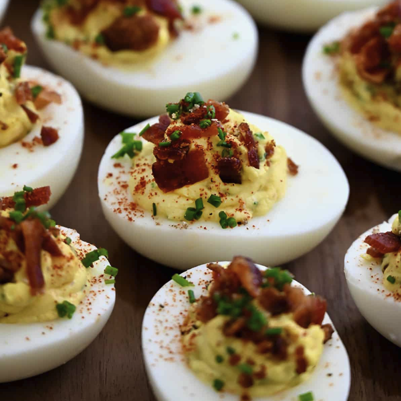

Deviled Eggs

Eggs So Devilish You'll Pray for Forgiveness!
This evil recipe combines the delights of deviled eggs with the sinful flavors of bacon and dijon!
Ingredients
- 1/4 cup mayonnaise
- 2 tsp sweet pickle juice
- 2 baby sweet pickles finely diced
- 1/2 tsp dijon
- Bacon strips
- Pinch of salt, or to taste
- 1/8 tsp black pepper
- Paprika for garnish
Steps
- Place eggs into a pot filled with water and bring to a boil
- Leave for 9-12 minutes
- Remove eggs and place into cold water
- Peel eggs
- Half eggs
- Remove yolks
- Mix yolks with may, pickle juice, dijon, salt, pepper, and diced pickles
- Place mix in a bag and cut the corner
- Squeeze mix into the halved eggs
- Add back crumbles
- Sprinkle paprika over eggs